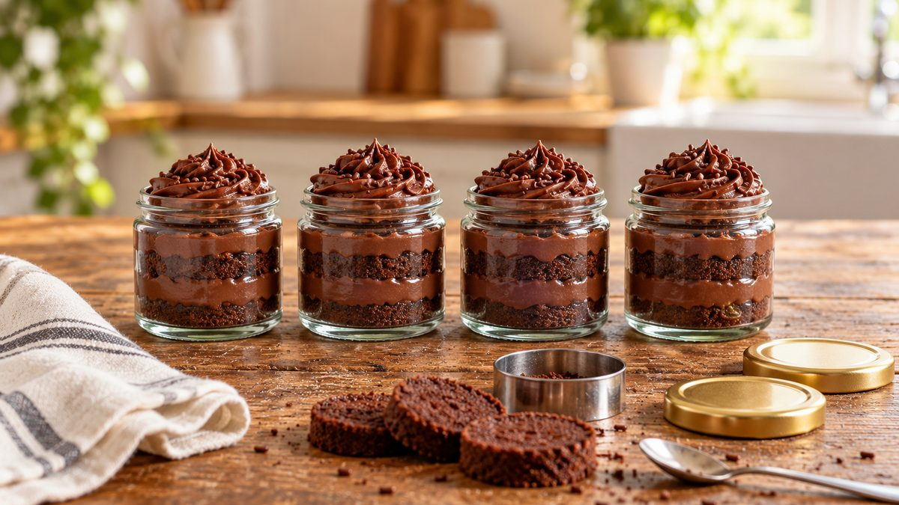

Bolo de pote em vidro: que pote usar e como montar as camadas

Bolo de pote vende pelo olho. A pessoa vê as camadas antes de provar, e é o pote que decide se elas aparecem bem ou não. A receita você já tem; aqui o foco é o que quase nenhum guia de receita conta: que pote usar e como montar as camadas para ficarem retas e visíveis.
Por que o vidro combina com bolo de pote
Pote transparente deixa as camadas à mostra, e isso torna o produto mais atraente, como lembra o guia de bolo de pote do iFood para parceiros. O guia da Deliway soma que o vidro costuma ter apresentação mais agradável e pode ser reutilizado pelo cliente. O contraponto é o peso: vidro pesa mais que plástico, e isso aparece na hora de entregar. Se o bolo vai viajar, veja como embalar potes de vidro para enviar sem quebrar.
Que tamanho de pote usar
Segundo o iFood, os potes mais usados para bolo de pote ficam entre 150 ml e 300 ml, e os de 200 a 250 ml são os mais comuns no delivery. Uma receita costuma render de 8 a 10 potes dessa faixa.
Para outros usos, o tamanho muda:
- Pote pequeno, de 40 ml: vira mini bolo de pote, bom para provar, para lembrancinha e para montar kit. O Pote Geleinha 40 ml mede 42,5 mm de diâmetro por 50 mm de altura, tem tampa twist-off e traz o bolo de pote entre os usos listados no catálogo da PodEmbalar.
- Pote de 150 a 300 ml: o tamanho de uma porção individual. Para comparar medidas e pesos reais de potes dessa faixa, veja como escolher o tamanho do pote de vidro pelo que você vai vender.
A capacidade do pote é a nominal. O quanto de bolo cabe de verdade depende do espaço livre que você deixa sob a tampa.
O que olhar no pote antes de comprar
- Transparência. Sem ela, ninguém vê as camadas.
- Abertura que deixa a colher entrar. Pote muito estreito para a colher atrapalha quem vai comer.
- Tampa que fecha bem. O iFood reforça que a tampa precisa vedar para não haver vazamento no transporte.
- Boca com diâmetro que você consegue cortar em disco. Veja a técnica logo abaixo.
- Tamanho igual em todos. Potes iguais deixam o lote uniforme e simplificam a montagem.
Como montar as camadas
A técnica é a mesma nas duas fontes: alternar massa e recheio, com discos de massa do tamanho do pote.
- Prepare a massa e o recheio com a receita que você já usa.
- Corte discos de massa do mesmo diâmetro do pote. Dá para usar a própria boca do pote ou um cortador do tamanho certo.
- Umedeça cada disco, como sugere a Deliway, com uma mistura de água e açúcar.
- Alterne as camadas: recheio, disco de massa, recheio, disco de massa.
- Finalize com uma camada generosa de cobertura e decore por cima com granulado, raspas de chocolate ou o que combinar com o sabor.
Camadas bem definidas e cobertura caprichada rendem foto melhor para o cardápio e para o Instagram. Um pote transparente e bem limpo por fora ajuda mais do que qualquer enfeite.
Se for entregar
Para delivery, o iFood recomenda lacre de segurança, para passar mais confiança ao cliente. Se esse é o seu caso, leia antes Vale a pena usar lacre de segurança na embalagem? e decida com calma.
Quer conhecer o pote? Veja a Geleinha 40 ml no site ou fale com a gente pelo WhatsApp para tirar dúvidas.
iFood para Parceiros: Bolo de pote, receita, embalagem e como vender no delivery (publicado em 27/06/2026),
Deliway: Como fazer bolo de pote para vender, guia definitivo (publicado em 07/02/2022).
Medidas, uso e características do Geleinha 40 ml: Catálogo PodEmbalar 2026.